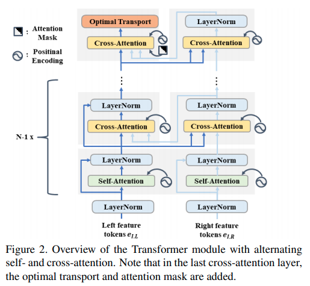

Collections of Stereo Matching from KITTI
本文记录了 Stereo Matching 有文章/有code实现的主要paper.将会持续update
| Methods | D1-all | D1-bg | D1-fg | Time |
|---|---|---|---|---|
| CSPN | 1.74 | 1.51 | 2.88 | 1.0 |
| GANet-deep | 1.81 | 1.48 | 3.46 | 1.8 |
| AcfNet | 1.89 | 1.51 | 3.80 | 0.48 |
| CDN-GANet | 1.92 | 1.66 | 3.20 | 0.40 |
| AANet+ | 2.03 | 1.65 | 3.96 | 0.06 |
| DecomposeNet | 2.37 | 2.07 | 3.87 | 0.05 |
| DeepPruner | 2.15 | 1.87 | 3.56 | 0.18 |
| PSMNet | 2.32 | 1.86 | 4.62 | 0.21 |
| FADNet | 2.82 | 2.68 | 3.50 | 0.05 |
| NVStereoNet | 3.13 | 2.62 | 5.69 | 0.6 |
| RTS2Net | 3.56 | 3.09 | 5.91 | 0.02 |
| SsSMnet | 3.40 | 2.70 | 6.92 | 0.8 |
| STTR | 3.73 | 3.23 | 6.2 | 0.6 |
其中本站其他页面已有的文章为CSPN,AcfNet, CDN-GANet, DeepPruner, PSMNet, FADNet, SsSMnet, RTS2Net.
目录:
- Collections of Stereo Matching from KITTI
- GANet
- AANet
- DecomposeNet
- NVStereoNet
- STTR: Revisiting Stereo Depth Estimation From a Sequence-to-Sequence Perspective with Transformers
GANet

Feature Extraction使用的是stacked hourglass network. Cost Volume的形成与PSMNet一致。然后接数个SGA模块，以及LGA模块。左图会接上"guidance subnet"使用数个简单卷积生成权重矩阵提供到GA模块中。
GA层对应scanline optimization方法 ref1 ref2,可以理解为一个动态规划算法,其中本文的为四个方向的矢量。里面的权重是每一个像素不一致的，通过subnet提供guidance.
Semi-Global Guided Aggregation(SGA) 需要的guidence权重大小为，不同disparity使用的权重一致:
Local Aggregation(LGA),需要的guidence权重大小为:
AANet

本文使用coorelation的方式生成3D Cost Volume.
Adaptive Intra-Scale Aggregation本质上是分组的可变卷积：
多scale融合，这里采用的是HRNet的方法
DecomposeNet

这篇paper的思路还是降低复杂度，在最低的分辨率下计算 Full Stereo Matching 的 Cost Volume. 在高分辨率下进行 Sparse Matching.
一张图概念上可以分为两种区域，一种是粗分类区域，这里的双目匹配结果可以从低分辨率上采样后refine出来；一种是细分类区域，这里的双目由高分辨率的sparse matching还原.
本文提出一个自监督的方案训练一个小网络识别图中被downsampling破坏的特征, 其输入是本层的特征以及下层上采样的的特征差, 输出的网络可以被训练，训练目标是增加 区域的特征差，同时要求其稀疏.
在稀疏Mask上直接计算disparity:
$$ \begin{aligned} C_{l}(h, w, d)&=<{F}{l}^{left}(h, w), {F}{l}^{right}(h, w-d)> \ P_{l}(h, w, d) &=\frac{\mathrm{e}^{C_{l}(h, w, d)-C_{l}^{\max }(h, w)}}{\sum_{d=0} \mathrm{e}^{C_{l}(h, w, d)-C_{l}^{\max }(h, w)}} \ C_{l}^{\max }(h, w) &=\max {d} C{l}(h, w, d) \
\hat{D}{l}(h, w)&=\sum{d=0} P_{l}(h, w, d) * d \end{aligned} $$
NVStereoNet

损失与monodepth相似
STTR: Revisiting Stereo Depth Estimation From a Sequence-to-Sequence Perspective with Transformers
这篇paper用Sequence/Transformer的角度重新理解双目pixel-wise matching. 作者指出主要有三大优势:
- 不再强约束要求一个固定的disparity上限
- 能识别遮挡区域，给出confidence
- 给出uniqueness约束 (这个是通过求解一个最优化问题实现的)
整体结构


本文的网络结构的每一个部件都是基础部件，设计上或者代码上主要的不同点:
- backbone网络采用的是类似于U-Net的结构,但是在最后一层采样后加了一个DeepLabv3的ASPP
- multiheader transformer里面交错使用self-attention与cross attention.而代码上两者分别只有一个multi-head的ModuleList, 也就是图中重复的模块使用的是相同的参数.
- attention是先调整形状, 输出相当于是在上展开一个个像素匹配，也就是理解为只在水平 epipolar line上进行匹配, 输出形状
- Position Embedding 采用的是作者提出的相对位置encode, 这个encoding是一个, 的encoder.
- 由于多层multihead的transformer运算量和显存占用很大，代码实现上需要用 checkpoint 技巧，也就是暂时不存储中间运算变量，在backward的时候再重新前传计算中间运算变量.
- 去到最后一层的时候作者指出应该考虑相机左右放置的关系，右feature与左feature计算attention的时候应该只计算部分的attention值 (上半三角).
Optimal Transport
从网络中得到匹配损失矩阵后，我们希望得到每一个像素的最优的, unique的结果. 这个问题可以被formulate为一个 optimal transport的问题, 有一个从分甜品motivate的比较好的博客. 用STTR这篇paper的语言进行问题表述:
目标函数的第一项为由损失函数矩阵决定的线性函数，第二项为交叉熵。约束函数要求每一个左图的像素只会对应一个右图的像素(概率和为1)， 每一个右图的像素也只会对应一个左图的像素.
Optimal Transport是一个 凸优化中的LP问题，使用KKT条件中对的导数为零可以得到: 其中 和与拉格朗日乘子和超参数有关，从约束中求解获得.
Sinkhorn Distances的原始代码则是:
def compute_optimal_transport(M, r, c, lam, epsilon=1e-8):
"""
Computes the optimal transport matrix and Slinkhorn distance using the
Sinkhorn-Knopp algorithm. From https://michielstock.github.io/OptimalTransport/
Inputs:
- M : cost matrix (n x m)
- r : vector of marginals (n, )
- c : vector of marginals (m, )
- lam : strength of the entropic regularization
- epsilon : convergence parameter
Outputs:
- P : optimal transport matrix (n x m)
- dist : Sinkhorn distance
"""
n, m = M.shape
P = np.exp(- lam * M)
P /= P.sum()
u = np.zeros(n)
# normalize this matrix
while np.max(np.abs(u - P.sum(1))) > epsilon:
u = P.sum(1)
P *= (r / u).reshape((-1, 1)) # normalize in first dimension
P *= (c / P.sum(0)).reshape((1, -1)) #normalize in second dimension
return P, np.sum(P * M)本文的代码则是默认为1，在 空间中进行迭代计算。